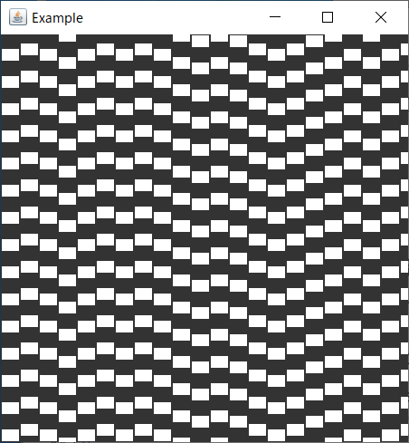

錯視
ミュンスターバーク錯視の図です。縦の線は皆平行ですが、傾いて見えます。

スタンドアローンアプリケーション(Swing版)のソースコードはこちら↓(文字コードはShift-JIS)。
止まったミュンスターバーク錯視の図です。
Ichimatsu.java
列ごとに動くスピードが変えられます。別のTimerオブジェクトを使って、四角を下方向へ動かしています。列をクリックして↑キーを押すとその列の動きが速く、↓キーで遅くなります。
IchimatsuMove.java